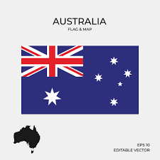

Best places to visit in every state
Victoria
New South Wales

Australia Capital Territory
Queensland
Western Australia
South Australia

Here you can see a Q&A related to various topics about Australia. This will help you to get to know more about this country.
Answer : The landing of the Australian and New Zealand Army Corps(Gallipoli, Turkey)
Answer : Black, red and yellow
Answer : Commonwealth Coat of Arms
Answer : The government is elected by the people
Answer : People can protest against the government